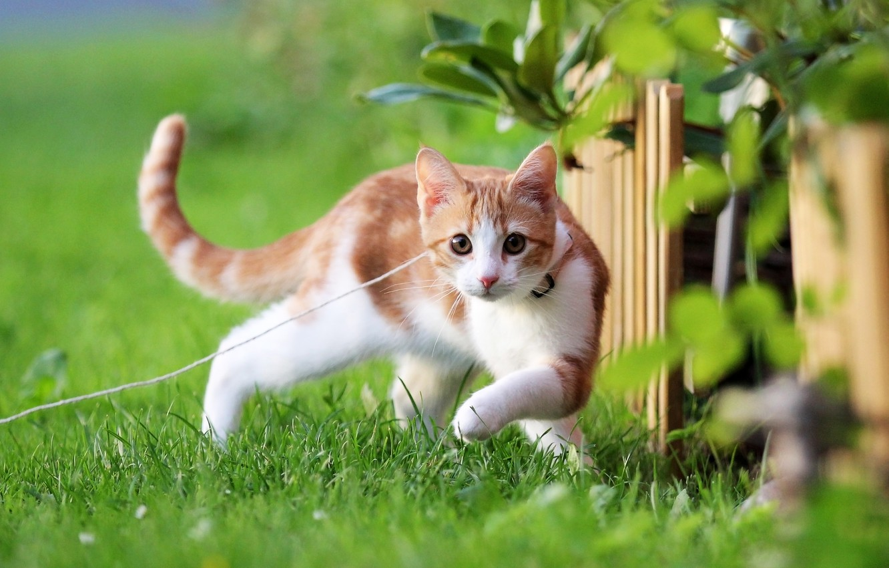

Дома́шняя ко́шка (лат. Felis catus) — домашнее животное, одно из наиболее популярных[1] (наряду с собакой) «животных-компаньонов»[2][3][4]. С точки зрения научной систематики, домашняя кошка — млекопитающее семейства кошачьих отряда хищных. Нередко домашнюю кошку рассматривают как подвид лесной кошки (Felis silvestris) — Felis s. catus[5], однако, с точки зрения современной биологической систематики (2017 год), домашняя кошка является отдельным биологическим видом[6]. Являясь одиночным охотником на грызунов и других мелких животных, кошка — социальное животное[7], использующее для общения широкий диапазон звуковых сигналов, а также феромоны и движения тела[8]. В настоящее время в мире насчитывается около 600 млн домашних кошек[9], выведено около 200 пород, от длинношёрстных (персидская кошка) до лишённых шерсти (сфинксы), признанных и зарегистрированных различными фелинологическими организациями. На протяжении 10 000 лет кошки ценятся человеком, в том числе за способность охотиться на грызунов и других домашних вредителей[10][11].
Go to main Page Google main page официальная википедия там больше информации про кишек или кишку big cat
5145